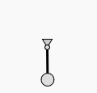
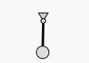

Even though g2 is no animation library, it is quite easy to animate graphics. We focus here on canvas based graphics as SVG has powerful inherent animation capabilities.
For animation purposes g2 offers two simple but important commands:
| Method/Command | Comment |
|---|---|
del() |
Delete the complete command queue. It is itself not a command but a method which is invoked immediately. Calling del() makes sense at the beginning of a command queue or after any exe command. |
clr({b,h}) |
Clear the viewport (completely or just within range of {b,h}. Does so during each rendering process, as it is a command. |
Now to start with animation, we should be familiar with browsers window.requestAnimationframe method, which gets a callback function as parameter.
The most primitive way is to always create a new command queue in the callback function we have to provide.
Example #
const g = g2(), x0 = 50, y0 = 50, r = 40, dphi = 0.02;
let phi = 0;
function render() {
const x=x0+r*Math.sin(phi),y=y0+r*Math.cos(phi);
// draw pendulum ...
g.del() // delete all commands in the queue ...
.clr() // clear the renderers viewport ...
.ply({pts:[44,40,56,40,x0,y0],closed:true,fs:"#ddd"})
.lin({x1:x0,y1:y0,x2:x,y2:y,lw:3}) // pendulum begins ..
.cir({x:x0,y:y0,r:3,fs:"#ddd"}) // .. and ends here.
.cir({x:x,y:y,r:8,fs:"#ddd"})
.exe(ctx);
phi += dphi; // increment angle ...
requestAnimationFrame(render); // requedst browser to call 'render' again ...
}
render(); // initial render call.

The most important thing with animation is to always delete the command queue by del, as otherwise the queue array is
ever growing - which is often not visible due to the clr command, but the execution gets jerky in the long run.
Not using clr is not as criticle, because previous positions are permanently visible. Sometimes this is exactly
what we want.
Let's improve the previous example. We can identify static geometry - which does not move - and dynamic geometry. So it makes sense, to only redefine the moving part of the drawing.
Example - Enhanced #
const pendulum = g2(), x0 = 50, y0 = 50, r = 40, dphi = 0.02;
let phi = 0;
world = g2().clr() // clear and then define static world
.ply({pts:[44,40,56,40,x0,y0],closed:true,fs:"#ddd"})
.use({grp:pendulum}) // reference pendulum here...
.cir({x:x0,y:y0,r:3})
function render() {
const x=x0+r*Math.sin(phi),y=y0+r*Math.cos(phi);
pendulum.del() // rebuild pendulum...
.lin({x1:x0,y1:y0,x2:x,y2:y,lw:3}) // pendulum begins ..
.cir({x:x,y:y,r:8,fs:"#ddd"})
world.exe(ctx);
phi += dphi;
requestAnimationFrame(render);
}
render();
Static geometry is collected in a g2 object which is defined only once initially while only referencing
the moving parts. Dynamic geometry is then defined in one or more other g2 objects and continuously rebuild
in the render function. During animation the complete graphics command queue is repeatedly rendered via exe
command. Please remember that drawing occurs completely at rendering time controlled by exe in a very compact
time. So animation is very smooth, as g2's command queue works like a back buffer.
See g2 clock as another example using that technique.
In fact the example above could be improved even more as the pendulum - as a rigid body - could be defined only once
and then transformed via use to its current position each time step. One can also think about replacement of that
use command with every frame in the command queue or even only replace its transform argument. But g2 neither
supports micro-manipulation of the command queue entries nor intends to do so.
In a possible next optimization step we could render the static parts to an extra layer - another renderer context - which is drawn only once then.
Example - Timed Animation #
Using window.requestAnimationFrame makes timed animation particularly easy. It passes a timestamp with every call
to the callback function.
const ctx = document.getElementById("c").getContext("2d"),
pendulum = g2(), x0 = 50, y0 = 50, r = 40, omega = 1.5,
world = g2().clr()
.ply({pts:[44,40,56,40,x0,y0],closed:true,fs:"#ddd"})
.use({grp:pendulum})
.cir({x:x0,y:y0,r:3});
function render(time) {
const t0 = render.first || (render.first = time), // memoize time at first call ...
t = (time - t0)/1000,
phi = Math.PI/3*Math.sin(omega*t), // oscillating equation...
x=x0+r*Math.sin(phi),y=y0+r*Math.cos(phi);
pendulum.del()
.lin({x1:x0,y1:y0,x2:x,y2:y,lw:3})
.cir({x:x,y:y,r:8,fs:"#ddd"})
world.exe(ctx);
requestAnimationFrame(render);
}
render();
